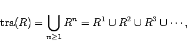
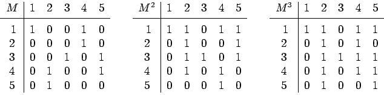
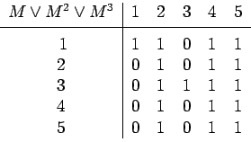
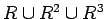

Inhalt Index DeskTop Bronstein

 Algebra und Diskrete Mathematik Mengenlehre Relationen und Abbildungen
Algebra und Diskrete Mathematik Mengenlehre Relationen und Abbildungen


Wichtige Eigenschaften einer binären Relation in einer Menge A:
R heißt
|  | (5.81) |
wobei unter Rn das n-fache Relationenprodukt von R mit sich selbst zu verstehen ist.
| Beispiel |
|
Die binäre Relation R auf der Menge {1,2,3,4,5} sei durch die Relationsmatrix M gegeben: 
Bildet man M2, indem man bei der Matrizenmultiplikation 0 und 1 als Wahrheitswerte interpretiert und anstelle von Multiplikation bzw. Addition die logischen Operationen Konjunktion bzw. Disjunktion verwendet, so ist M2 die zu R2 gehörige Relationsmatrix. Entsprechend kann man auch die Relationsmatrizen von R3, R4 usw. aufstellen. 
Die zu  gehörige voranstehende Relationsmatrix erhält man, indem man die Matrizen M, M2 und M3 elementweise disjunktiv verknüpft. Da höhere Potenzen von M keine neuen Einträge liefern, ist diese Matrix zugleich die zu tra(R) gehörige Relationsmatrix. |
Die Relationsmatrix und das Relationenprodukt finden auch Anwendung zur Untersuchung von Weglängen in Graphen.
Bei endlichen binären Relationen kann man die Eigenschaften (5.75) bis (5.80) größtenteils leicht aus den Pfeildiagrammen bzw. Relationsmatrizen erkennen. So erkennt man z.B. Reflexivität durch ,,Schlingen ``im Pfeildiagramm bzw. durch Einsen der Hauptdiagonalen der Relationsmatrix. Symmetrie äußert sich im Pfeildiagramm dadurch, daß zu jedem Pfeil ein gegenläufiger gehört bzw. durch Symmetrie der Relationsmatrix. Aus dem Pfeildiagramm oder der Relationsmatrix liest man ab, daß die Teilbarkeitsbeziehung T reflexiv, aber nicht symmetrisch ist.